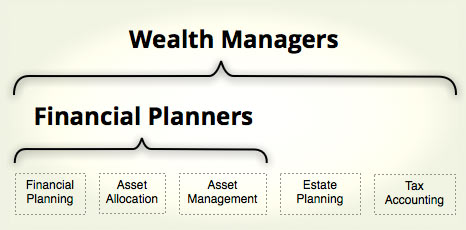

---
---
<div class="container">
  <div class="row-fluid">
    <div class="span12">
      <h1>What to Expect</h1>
    </div>
  </div>

  <div class="row">
    <div class="span12">
      <h2>Financial Planners vs. Wealth Managers vs. Asset Managers</h2>
      
      <p>Kopion is an Asset Manager which is different from a Financial Planner or a Wealth Manager.  These fields are often confused with each other because of their similar names, but they ultimately address different needs.  In broad terms, the difference between Financial Planners (or Wealth Managers) and Asset Managers is analogous to the difference between family practice physicians and surgeons.  Family doctors and surgeons are both physicians, and they are familiar with each other’s respective disciplines, but they address different needs.  Financial Planners usually address individuals’ broad savings needs, helping them to determine how much to save, a suitable high level investment plan (referred to as an Asset Allocation), and then specific investments through which to execute this high level plan.  They also bring a level of structure and discipline that helps clients adhere to their plans, similar to how personal trainers help people to exercise regularly.  Wealth Managers address the same needs as Financial Planners, but they serve wealthy clients who also need guidance about complex tax and estate issues.</p>  

      <p>The detailed process of selecting individual stocks and bonds is referred to as Asset Management.  Financial Planners and Wealth Managers usually delegate this function, either by buying mutual funds or engaging third party asset managers.  This is analogous to how a family doctor will refer patients to a surgeon.  Asset Management is typically delegated because it requires a specialized skill set and is very time consuming.  The relationships between these fields is illustrated below:</p>

      <p class="center">
        
      </p>

      <p>Kopion specializes in equity asset management and does not address needs for financial planning or other types of investments such as bonds.  We can, however, provide referrals for other professionals who do address those needs.   </p> 
    </div>
  </div><!-- end row -->

  <div class="row">
    <div class="span12">
      <h2>Separately Managed Accounts</h2>
      
      <p>Each of our clients has their own account that is custodied at a well known broker in the client's name.  Kopion has a Limited Power of Attorney that allows us to make trades on the client's behalf and withdraw our contractually defined management fee. Because Kopion is managing regular brokerage accounts, clients receive regular trading confirmations, monthly statements and tax documents directly from the broker.  Their accounts are also accessible online.  Kopion supplements this information with its own quarterly statements to provide information about performance and upcoming management fees. </p> 

      <h2>Fees</h2>
      
      <p>Kopion charges a quarterly management fee that is based on the value of each client’s account at the end of each quarter.  This fee and its supporting calculations are communicated to the client two weeks before it is withdrawn from their account.</p>  

      <p>Kopion does not earn commissions of any type.</p>

      <h2>Minimum Account Size</h2>
      
      <p>Kopion’s minimum account size is $125,000. </p>

      <p>This minimum applies to the aggregate assets that Kopion manages for each client.  In some cases, Kopion is able to manage multiple accounts as if they were a single portfolio.  For example, a husband and wife’s IRA accounts can be managed collectively as one portfolio.</p>

      <h2>Types of Accounts</h2>
      
      Kopion is able to manage several types of accounts including individual, joint, IRA, and trust accounts.  We cannot manage 401k's, though 401k's from previous employers can be rolled over into IRA accounts which we can manage.
    </div>
  </div><!--end row -->
</div>

